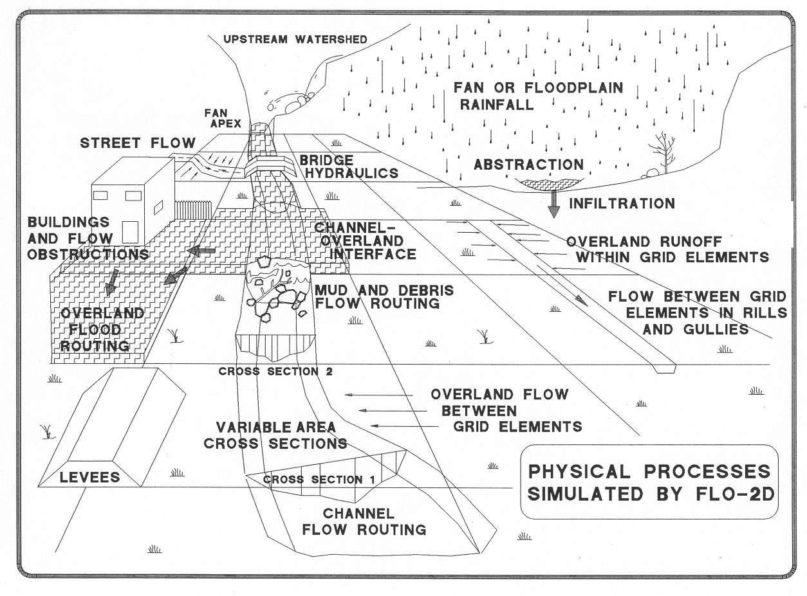
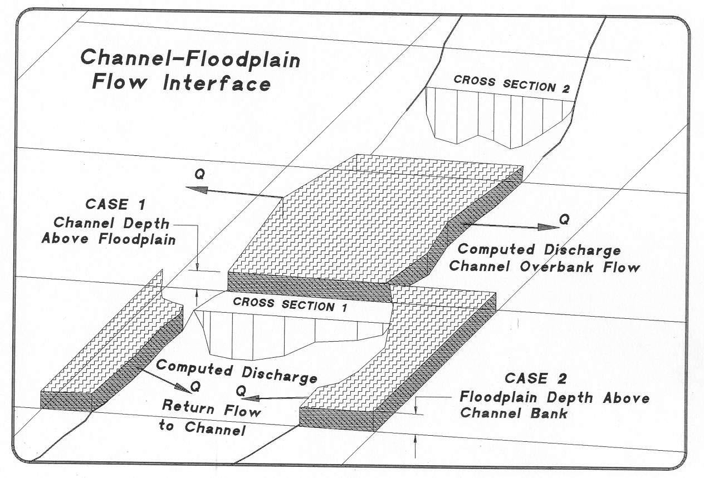
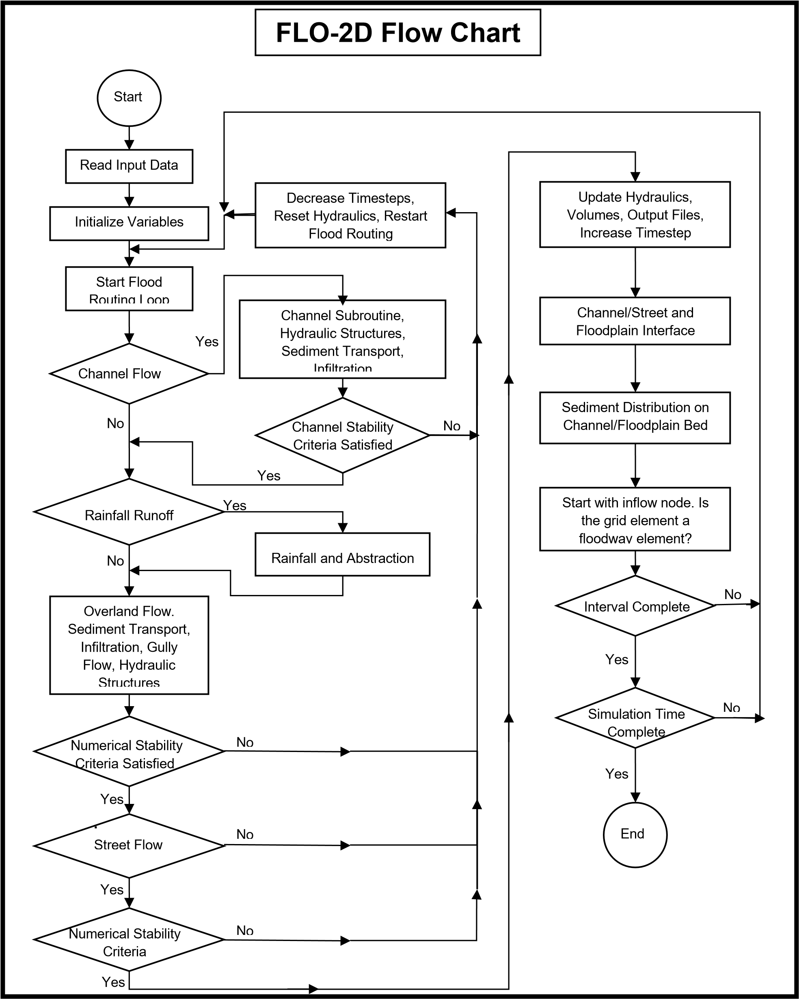

1. CHAPTER 1: INTRODUCTION
This Reference Manual discusses the physical processes of flooding. It is designed to acquaint the user with the model theory, finite difference algorithms, model components, modeling assumptions and limitations, and potential flood scenarios. A reference list is provided for further reading.
1.1. Evolution of the FLO-2D Model
The first version of the FLO-2D model was called MUDFLOW. It was initiated in 1988 to conduct a Federal Emergency Management Agency (FEMA) flood insurance study (FIS) of an urbanized alluvial fan in Colorado. FEMA had requested the investigation of flood routing models that might be suitable for simulating mudflows. The Diffusive Hydrodynamic Model (DHM) created by Hromadka and Yen (1987) and distributed by the USGS was considered as a template to develop a more sophisticated hydraulic model for mudflows. The selection of the DHM model as a guide for the MUDFLOW model was based on its availability in the public domain, its simple numerical approach and a finite difference scheme that permitted modification of the grid element attributes.
The original MUDFLOW model was only a few hundred lines of FORTRAN code and was limited to 250 grid elements. A six-hour hydrograph took over 12 hours to run on an XT computer. After 28 years of development, the program code has grown to be more than 50,000 lines of code, over 90 subroutines and a number of processor programs. Virtually none of the original simplistic DHM concept remains in the current FLO-2D model. FLO-2D computes overland flow in 8-directions, reports on mass conservation, utilizes a variable timestep incrementing and decrementing scheme, incorporates efficient numerical stability criteria, has unlimited array allocation (unlimited grid elements), includes graphical editing, and has output display processor programs.
FLO-2D is a physical process model that routes rainfall-runoff and flood hydrographs over unconfined flow surfaces or in channels using the dynamic wave approximation to the momentum equation. It has many components to simulate street flow, buildings and obstructions, sediment transport, spatially variable rainfall and infiltration, floodways, storm drains and many other flooding details. Predicted flow depth and velocity between the grid elements represent average hydraulic flow conditions computed for a small timestep (on the order of seconds). Typical applications have grid elements that range from 10 ft (3 m) to 500 ft (130 m) on a side and the number of grid elements is limited only by the computer resources and runtime.
1.2. Modeling the Hydrologic System with FLO-2D
The FLO-2D model has components for rainfall, channel flow, overland flow, street flow, infiltration, levees, sediment transport, storm drain and other features. The model utility is experienced through its application to diverse flooding problems. Starting with a basic overland flood scenario, details can be added to the simulation by simply turning ‘on’ or ‘off’ switches for the various components shown in Figure 1. Multiple flood hydrographs can be introduced to the system either as a floodplain or channel inflow. As the floodwave moves over the floodplain or down channels or streets, flow over adverse slopes, floodwave attenuation, ponding and backwater effects can be simulated. In urban areas, buildings and flow obstructions can be simulated to account for the loss of storage and redirection of the flow path. The levee component can be used to simulate walls or berms that confine the flow.
Channel flow is one-dimensional with the channel geometry represented by either by natural, rectangular, or trapezoidal cross sections. Street flow is modeled as a rectangular channel.
Overland flow is modeled two-dimensionally as either sheet flow or flow in multiple channels (rills and gullies). Channel overbank flow is computed when the channel capacity is exceeded. An interface routine calculates the channel to floodplain flow exchange including return flow to the channel. Similarly, the interface routine also calculates flow exchange between the streets and overland areas within a grid element (Figure 2). Once the flow overtops the channel, it will disperse to other overland grid elements based on topography, roughness, and obstructions. There are sediment transport and mud and debris flow and components to address mobile bed and hyperconcentrated sediment flows. The user is encouraged to apply these components while understanding the contribution of each component to the overall flood distribution.
It is important to assess the level of detail required on a given project. FLO-2D users tend to put more detail into their models than is necessary for a large flood event. Preparation of channel flow, street flow, buildings and flow obstructions data files can be time consuming and should be tailored to meet the project needs. The desired accuracy of predicted water surface elevations should be consistent with the resolution of the mapping, survey, and hydrologic data. Simulating large floods requires less detail than shallow flood or mitigation design models. Grid element sizes ranging from 20 ft (8 m) to 500 ft (130 m) are practical for most flood inundation projects.
The accuracy of a FLO-2D flood simulation is dependent on the volume of water introduced to the model either in the form of rainfall and inflow flood hydrographs. FLO-2D reports on volume conservation both during and after the simulation. This reveals the ultimate disposition of inflow volume either as a loss to the system (abstraction, infiltration, or evaporation), as floodplain or channel storage, or as outflow off the grid system. The inflow volume dictates the area of inundation and will control model calibration to available post flood data if replicating an historical storm.
Figure 1. Physical Processes Simulated by FLO-2D.
Figure 2. Channel – Floodplain Interface.
1.3. Getting Started on a Project – A Brief Overview
There are two steps to starting a flood simulation, obtaining the topographic data, and developing the flood hydrology. For the first step, a digital terrain model (DTM) must be overlaid with a grid system. Either the QGIS plug-in tool or the Grid Developer System (GDS) processor program will generate a grid system on a DTM data and assign elevations to the grid elements. Shape files, aerial photography, detailed topographic maps, orthographic photos and digitized mapping can be used to locate key features with respect to the grid system such as streets, buildings, bridges, culverts or other flood conveyance or containment structures.
Figure 3 is a flow chart that outlines how the various components interface with each other.
Each flood simulation requires some water either as an inflow flood hydrograph or as rainfall. The discharge inflow points might include the alluvial fan apex or a known discharge location in a river system. FLO-2D can be used to generate the flood hydrograph at a specific location by modeling the rainfall-runoff in the upstream watershed. Another approach is to use an external hydrologic model to generate an inflow hydrograph for the FLO-2D model. Any number of spatially variable inflow hydrographs can be input to the model. Rainfall can also be simulated on the water surface as the flood progresses over the grid system. Rainfall can be uniformly distributed or spatially variable using either depth area reduction values or grid element interpolated rainfall radar data (NEXRAD). The inflow flood volume is the primary factor that determines the predicted area of inundation. For that reason, it is suggested that an appropriate effort be spent on the hydrologic analysis to support the accuracy of the flood routing simulation.
Results from a FLO-2D flood simulation may include: outflow hydrographs from flow off the grid system; hydrographs and flow hydraulics for each channel element; flood hydrographs and hydraulics for designated floodplain cross sections; maximum flow depths and velocities for all grid elements; changes in bed elevation; impact force and number of other specific hydraulic variables, and a summary of the inflow, outflow, storage and volume losses in the system. The user can specify the temporal and spatial output detail including the outflow hydrograph locations, the output time intervals and the graphical display of the flood progression over the grid system. After the preliminary FLO-2D runs, the user can apply the output options to determine required level of output detail.
Figure 3. FLO-2D Flow Chart.